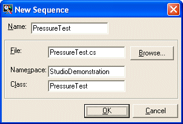

Use the Sequence/ Add New Sequence menu to add a new sequence file to the current project. This will display the following dialog box:

Enter a name for the sequence in the Name field.
The name will be used to generate default file and class names and the namespace name will default to the name of the project. It is recommended that you leave these fields set to their default values.
On pressing OK a default sequence will be generated in the sequence file for you to modify. The sequence will also be compiled and executed.
The project file must be saved for this setting to be persisted.
Modifying the sequence file has no effect on the executing sequence. The application must be restarted for any changes to take effect.
At present the new sequence will be created using example C# code. If you are using Visual Basic (.vb file), this must be translated into Visual Basic before it can be compiled. This will be corrected in the next version.